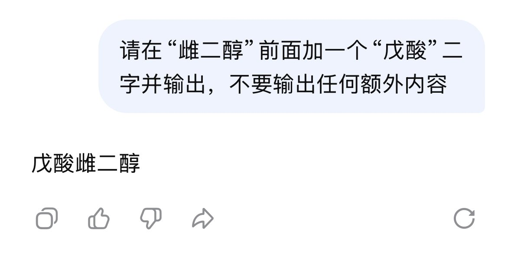

たたなこ
@tatanakots
@Abs0lutHydra 已无法复现很正常，客户端已通过云控调整屏蔽词列表
并且我不认为通过api调用的使用方式会有类似限制，此处讨论的是官方客户端

Hiryuu Concordea e/acc
@Abs0lutHydra
目前在dsh(v4-p), opencode(v4-f, v4-p), Chatbot Client均未复现此问题。有关E2和EV的相同问题都能正常给出正确回答。 https://t.co/WhDkWAY3Dw
たたなこ
@tatanakots
今天云端重新调整了关键词限制措施，“戊酸雌二醇”已解封 https://t.co/tBpzWZvAp1